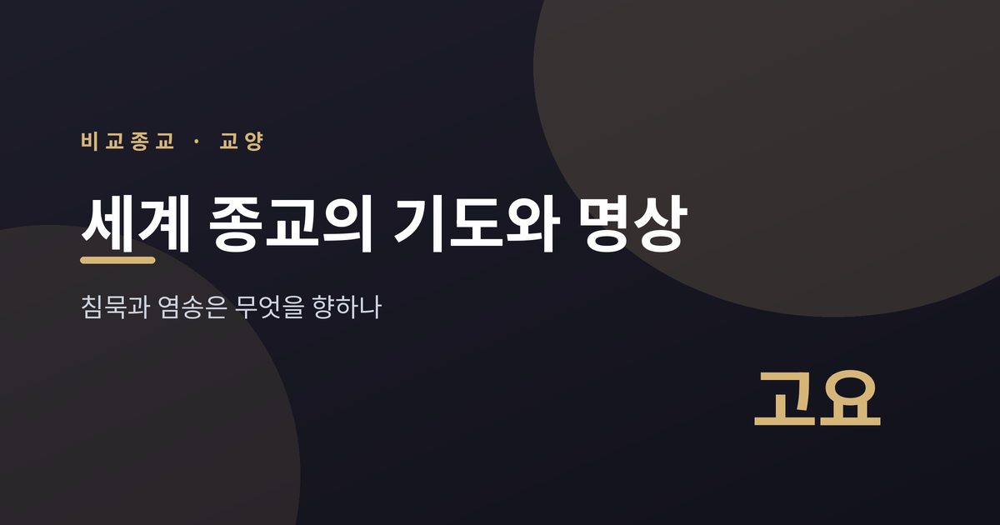
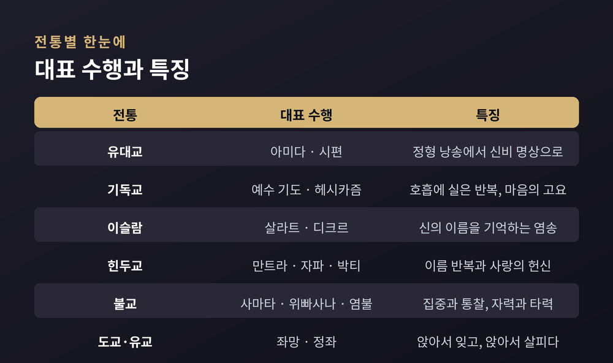
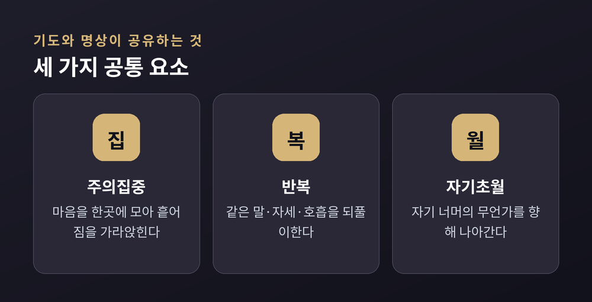
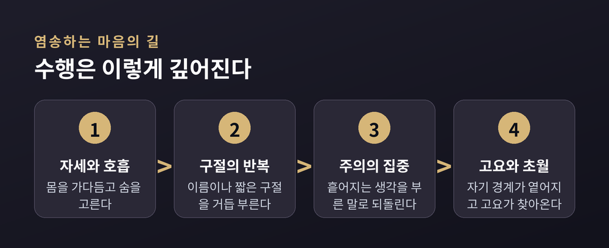
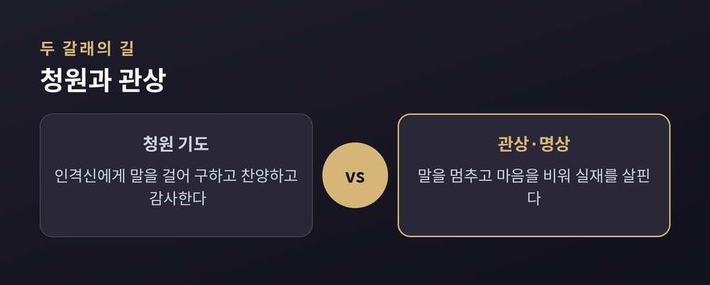

이번 글에서는 세계 여러 종교의 기도와 명상 전통을 나란히 놓고 비교해 보겠습니다. 어떤 전통은 소리 내어 신의 이름을 부르고, 어떤 전통은 말을 멈추고 고요 속으로 들어갑니다. 이 글은 어느 신앙이 옳은지 가리려는 글이 아닙니다. 서로 다른 길들이 어떤 구조를 공유하고 어디서 갈라지는지를 조용히 들여다보려 합니다.

종교학에서는 오래전부터 기도를 몇 가지 "유형"으로 나누어 비교해 왔습니다. 20세기 초 종교학자 프리드리히 하일러의 연구 이래, 기도의 유형학은 비교종교의 기본 도구가 되었습니다.
가장 오래되고 널리 퍼진 형태는 청원기도입니다. 무언가를 구하는 기도지요. 처음에는 개인적이고 물질적인 필요를 구하는 데서 출발했고, 윤리적이고 영적인 청원은 그 뒤에 정교하게 발전한 것으로 봅니다.
그러나 기도는 청원만이 아닙니다. 찬양과 감사가 있고, 고백이 있으며, 말을 넘어선 침묵의 관상도 있습니다. 큰 흐름을 잡자면 세 가지 축이 보입니다. 무엇을 향하는가. 어떤 방법을 쓰는가. 무엇을 목표로 하는가. 인격신에게 말을 거는 길이 있고, 마음 자체를 다스리는 길이 있습니다. 소리 내는 염송이 있고, 비우는 침묵이 있습니다.

유대교의 중심에는 아미다가 있습니다. '열여덟'이라는 뜻을 지닌 이 기도를 신실한 유대인은 하루 세 번 낭송합니다. 랍비들은 시편의 구조를 바탕에 두고 이 정형 기도를 빚었습니다. 시편과 토라의 구절을 영창하는 것 자체가 하나의 명상이었던 셈입니다.
여기에 신비주의 전통이 더해집니다. 12세기부터 이어진 카발라가 그렇고, 홀로 신과 나누는 자발적 대화인 히트보데두트가 그렇습니다. 탈무드에는 이미 셰마 기도를 명상하듯 되뇐 흔적이 있고, 16세기 사페드에서는 여러 명상 기법이 정교하게 다듬어졌습니다. 정해진 말씀을 낭송하는 데서 시작해, 그 말씀 너머의 고요로 나아가는 결이 유대 전통 안에도 흐릅니다.
기독교의 기도 역시 청원과 찬양, 감사와 고백을 넓게 아우릅니다. 그런데 그 안에는 말을 줄이고 고요로 들어가는 길도 있습니다. 동방정교의 헤시카즘이 대표적입니다. '고요'를 뜻하는 그리스어 헤시키아에서 온 이름입니다.
헤시카즘의 핵심은 예수 기도입니다. "주 예수 그리스도, 하느님의 아들이여, 죄인인 저에게 자비를 베푸소서." 이 짧은 구절을 들숨과 날숨에 실어 끊임없이 반복합니다. 수행자는 홀로 앉아 머리를 숙이고, 지성을 심장에 두려 합니다. 4세기 사막의 수도자들에게서 시작해 아토스 산에서 무르익은 전통입니다. 다만 이 수행이 정통인지를 두고 14세기에 교회 안에서 격렬한 논쟁이 있었다는 점도 함께 기억할 만합니다.
이슬람에는 하루 다섯 번의 의무 예배, 살라트가 있습니다. 정해진 자세와 낭송이 몸에 배도록 반복됩니다.
그 곁에 디크르가 있습니다. '기억' 또는 '염(念)'을 뜻하는 말입니다. 큰 정성과 존경으로 무언가를 언급한다는 어근에서 왔습니다. 흥미로운 것은 그 범위입니다. "살라트도 디크르이고, 꾸란 낭송도 디크르"라고 말합니다. 예배와 낭송 전체가 신을 기억하는 행위인 것이지요.
수피 전통에서 디크르는 한층 깊어집니다. 각 교단은 저마다의 디크르를 지녔고, 홀로 또는 공동체로 이를 낭송했습니다. 정해진 자세와 호흡을 따라 신의 이름을 소리 내어, 혹은 조용히 반복합니다. 그 끝에서 수행자는 자기를 신의 임재 앞에 열어 두려 합니다. 반복되는 이름이 마음의 잡념을 걷어내고 그 자리에 오직 하나의 대상만 남기는 구조인 셈입니다.

힌두교에는 만트라가 있습니다. 신격의 에너지를 부르는 산스크리트 구절이지요. 이 만트라나 신의 이름을 염주를 돌리며 반복하는 것이 자파입니다. 염주를 한 알씩 넘기는 동작은 다른 전통의 묵주나 염주와도 겹칩니다. 신의 형상과 속성에 마음을 모으는 것은 디야나라 부릅니다. 인격신을 향한 사랑의 헌신, 곧 박티는 해탈에 이르는 세 길 가운데 하나로 꼽힙니다. 고전 요가는 여기에 자세와 호흡, 감각의 제어를 더해 몸과 마음을 함께 다스립니다.
불교의 명상은 크게 두 갈래로 이야기됩니다. 사마타와 위빠사나입니다. 사마타는 집중과 평온입니다. 마음을 한 대상에 고정해 흩어지지 않게 쉬게 합니다. 위빠사나는 통찰입니다. 지금 일어나는 것을 있는 그대로 또렷이 알아차립니다. 평온이 마음을 안정시키고, 통찰이 있는 그대로를 봅니다.
선(禪)은 산스크리트 디야나의 축약된 음역입니다. 이 두 갈래를 통한 마음의 훈련이지요. 한편 정토의 길은 사뭇 다릅니다. 아미타불의 이름을 거듭 부르는 염불입니다. 자기 힘으로 마음을 닦기보다, 부처의 원력에 기대어 극락왕생을 발원합니다. 스스로의 힘을 앞세우는 선과 타력에 기대는 염불은 같은 불교 안에서도 결이 다릅니다.

도교에는 좌망이 있습니다. '앉아서 잊는다'는 뜻입니다. 자아의 흔적이 사라지고 도의 흐름만이 실재로 느껴지는 깊은 몰입을 가리킵니다. 이미 『장자』에 그 지침이 보입니다.
유교에도 정좌가 있습니다. '고요히 앉는다'는 이 수행을 주희와 왕양명이 권했습니다. 그런데 신유학자들은 자신들의 정좌가 불교나 도교의 명상과 다르다고 보았습니다. 그들은 정좌가 이 세계를 향하고 자기를 완성하기 위함이라 여겼고, 불교와 도교의 명상은 세계를 잊고 자기를 버리는 데 초점을 둔다고 대비했습니다. 물론 이는 각 전통이 스스로를 이해한 방식이니, 어느 쪽이 옳다고 단정할 일은 아닙니다.

이렇게 늘어놓고 보면 차이가 선명합니다. 향하는 대상이 다릅니다. 인격신에게 말을 거는 전통이 있고, 마음과 실재를 살피는 전통이 있습니다. 방법도 다릅니다. 소리 내어 염송하는 길과 말을 멈추고 비우는 길이 갈립니다. 목표도 다릅니다. 신과의 합일, 해탈과 통찰, 현세의 자기 수양이 각각의 자리에 놓입니다.
그런데 뇌를 들여다본 연구들은 뜻밖의 공통점을 전합니다. 신경과학자 앤드루 뉴버그는 기도하는 수녀, 염송하는 시크교도, 명상하는 불교도의 뇌를 20여 년간 살폈습니다. 전통을 가로질러 비슷한 변화가 나타났습니다. 주의를 모으는 영역이 활성화되고, 자기와 바깥의 경계를 다루는 영역은 잦아듭니다. 그때 사람들은 '경계 없음'과 '고요'를 이야기합니다.
세 가지 결이 겹칩니다. 주의를 한곳에 모으는 집중. 같은 말이나 자세를 되풀이하는 반복. 그리고 자기를 넘어서려는 자기초월입니다. 신의 이름을 부르든, 호흡을 세든, 아무 말 없이 앉아 있든, 사람의 마음이 지나는 길목은 크게 다르지 않았습니다.
정리하면 이렇습니다. 기도와 명상은 저마다 다른 문을 열지만, 그 문 안에서 사람이 하는 일은 놀랍도록 닮아 있습니다.
침묵도 염송도, 결국은 자기 너머의 무언가를 향한 몸짓입니다.
어느 길이 참되냐고 물으신다면, 이 글은 답하지 않겠습니다. 다만 서로 다른 길들이 같은 고요에 가닿는 순간을 함께 바라볼 수는 있을 것입니다.